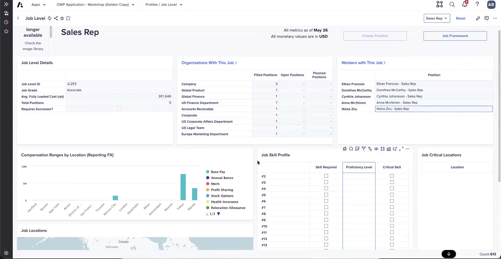
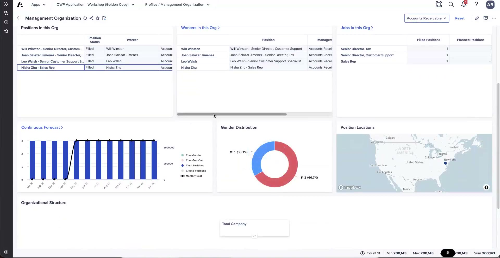

The CPP Workspace
Position-plan grid, worker cards, and start-anywhere drill
The CPP workspace is where the day-to-day work happens. It brings together the position-plan grid, worker cards with their KPIs, and a set of drill-through pages that let you move from any starting point to the job, worker, or org behind it.
The position-plan grid
The position-plan grid is the main view. Each row is a position, and the columns describe it end to end — whether it is filled, who is in it, where it sits, and what it costs:
- Which positions are filled.
- Worker names for filled positions.
- The org.
- The associated cost center.
- The mappings.
- The costs.
- The location.
- Where a plan position was created — forecast vs. budget.

The HRBP position-plan grid and Workers table, with the distribution charts below.
Worker cards and KPIs
Each worker has a card that surfaces a set of KPIs. The card is customizable — KPIs can be shown, unlisted, or removed depending on what the customer wants to expose. The KPIs include:
- Tenure
- Position
- Location
- Gender
- Generational distribution
- Race
- Ethnicity
- Performance rating
The diversity-related KPIs — gender, generational distribution, race, ethnicity, and performance rating — are defaulted to "unlisted" or removed entirely if the customer declines them. It is a per-customer choice about what to surface on the worker card.
Start anywhere, go everywhere
The workspace is built on a "start anywhere, go everywhere" idea: from links at the top you can drill into a job profile or a management org, and from there keep moving through the connected view of the organization.
Job-level detail
The job-profile page shows the detail for a job level:
- The job-level details.
- Which orgs have this job.
- The workers across the org who hold this job.
- The required skills, the proficiency level for each, and whether it is a critical skill.

The Sales Rep job profile, including the Job Skill Profile with critical-skill flags.
Drill to a worker
From a job you can drill into an individual worker. For example, Dorothy in San Francisco: her start date, tenure, position, compensation breakout, compa-ratio, and — if it has been loaded — her performance rating.
Pivot to an org
You can also pivot to an org. For example, the AR (accounts-receivable) org: it might show three filled positions — one held by Nisha, a sales rep — along with the workers, their locations, and an org-chart widget. From the org view you can act directly: create a position or depart a worker.

The Accounts Receivable org view — Nisha Zhu among the filled positions.